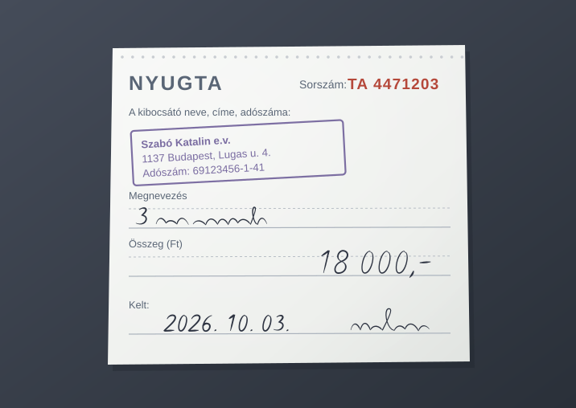

Összeg18 000Ft
Hová kerültaz októberi bevételedhez
Feltöltöttedszombaton, fotóként, 1 oldal
Hol tart

Feltöltve
Szombat, október 3., 18:40
Bence látta
Hétfő, október 5., 9:05
Feldolgozva
Hétfő, október 5., 9:20
4
Beadva
A IV. negyedéves bevallással, legkésőbb január 12-én.
Bence megjegyzése
Rendben, hozzáadtam az októberi bevételedhez. Ha máskor is kézzel adsz nyugtát, elég a hónap végén egyszerre lefotóznod a tömb lapjait.
 Bencehétfő 9:20
Bencehétfő 9:20